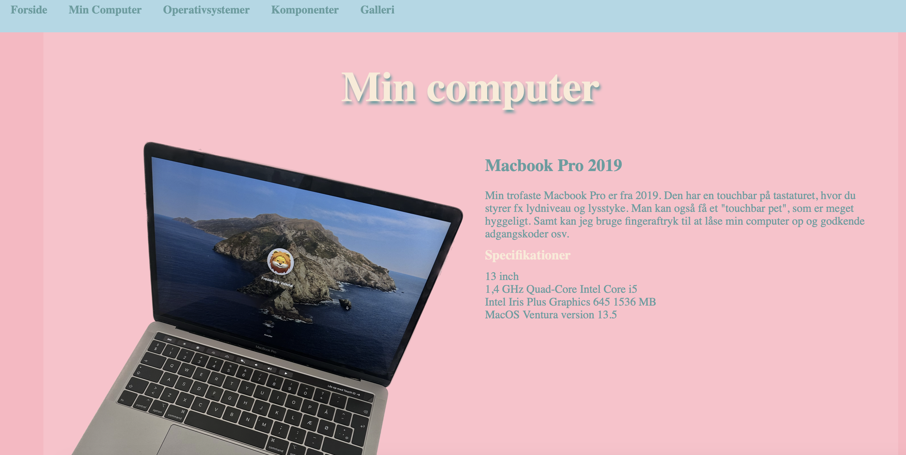

PORTFOLIO
Tema 1 - Lær hinanden at kende
Første video projekt - Kærlighed til Kaffe. Her lavede vi en video om en fælles interesse. Vi blev enige om, at kaffe var det bedste. Jeg fik her min første oplevelse med Premier Pro og klippede videoen og lagde lyd på som den eneste. Derudover arbejdede vi også med forskellige kamera vinkler og virkemidler.
Tema 2 - Mobilsite/Studiestartsprøven
Jeg startede tema 2 ud at lave et meget simpelt mobilesite. Her blev vi for første gang udfordret på kodning, billedestørrelser samt css. Samt skulle vi lave sitet responsivt i forhold til brug på mobile enheder. Når jeg ser tilbage på websitet, så ville jeg gerne have gjort noget andet med farverne. Kontrasterne skær mig lidt i øjnene.

Derefter skulle vi lave vores mobilsite om til et website samt ændre på de ting, vi ikke følte spillede. Jeg valgte at ændre på farverne samt blev alle billeder ændret. Jeg gik efter en "diner"/"bubblegum"-stil og føler at jeg lykkedes med det. Farve valget i hvert fald. Jeg brugte også for første gang photoshop og skar billedet af min computer fri fra baggrunden.
Tema 3 - Emnesite
I tema 3 skulle vi lave et emnesite. Her lærte vi om user experience. Her var fokuset meget på at lære at lave research, idéudvikling og prototyper for at bygge en hjemmeside op. Jeg lærte forskellige research-former: desk research, observation, interview og survey. Jeg lavede bl.a. interview og research. Jeg lavede et interview med en stor FCK fan og lavede en 5 sec test på mit logo. Samt en crazy 8 på min merit side. Jeg lærte også om brugen af målgrupper og bruger historier. Derudover benyttede jeg figma til at lave en prototype af mit site her.
Vi skulle også benytte designprincipper som fx gestaltlove. Jeg har prøvet at følge loven om lighed, hvor emner der er står sammen, hører sammen.

Tema 4 - Grundlæggende animation
I dette tema blev vi udfordret til at designe og kode et spil med det formål at opnå færdigheder inden for udviklingen af digitale brugergrænseflader. Gennem denne opgave erhvervede jeg viden om designprincipper inden for spildesign samt vigtigheden af at opretholde en bestemt og sammenhængende stil. Efter at have udviklet min idé, lavede jeg en billede serie, hvor jeg demonstrerede, hvordan spillet skulle spilles. Se det her.
For yderligere information om spillet, herunder ideen, skitser, teknik og en liste over aktiver
Jeg har fået størst inspiration fra stilen Flat design 2. Min spilfigur og spillet gør brug af solid drawing samt asymmetri. Tynde arme og ben, med bløde former. Min figur vil bærer præg af at være computerlavet og er meget enkel. Jeg brugte simple former til at skabe både baggrund og figurer. Jeg vil overfører farverne næsten direkte - da de passer godt til mit spil. Jeg brugte 5 forskellige farver til hele spillet. Jeg har fokuseret på en forgrund, midte og baggrund.
Inden for koden blev fokus rettet mod JavaScript. Her opnåede jeg forståelse for variabler, som jeg definerer i begyndelsen af dokumentet, såsom liv, point og hastighed. Efterfølgende udskriver jeg variablerne og angiver deres startværdier. Længere nede i koden specificerer jeg, at falde animation skal starte samt at når den er færdig med at falde, at den skal gå til reset og starte forfra.
Derudover fik jeg også knækket koden til at afspille forskellig lyd, når der blev trykket på de forskellige figure.
Før jeg gik i gang med kodning, anvendte jeg aktivitetsdiagrammer til at beskrive, hvordan det interaktive system skulle fungere. Disse diagrammer blev brugt til at illustrere, hvilke handlinger og beslutninger der ville påvirke spillets forløb. Efterfølgende udarbejdede jeg et state machine diagram, som giver en mere detaljeret visning sammenlignet med aktivitetsdiagrammet. Dette diagram blev brugt som en guide under koden, og det var afgørende, at navngivningen af funktionerne matchede det, der blev beskrevet i diagrammet.
Tema 5 - Passionssite/Virksomhedssite
Indhold for fanen 5...
Tema 6 - Portfolio site
Indhold for fanen 6...